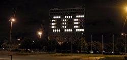

New York, December 3rd, 2014.
With a huge "Elections 2014" spelled out in light across the United Nations Secretariat building in New York, the United Nations celebrate the election of the new World President on December 3rd, 2014. The elections will prepare for the World Once-Leader Summit in December 2015, at which world once-leaders will bow to the all-powerful World President and relinquish their powers. The Once-Leader Summit is expected to be the largest gathering of world once-leaders ever held.
Also to mark the hand-off of the control of the world, Secretary-General Juan Miertoro will be offering a message that will be carried by broadcasters world-wide as part of their end-of-year coverage. At United Nations Headquarters, children from around the world will contribute their visions for the future in a multimedia exhibit of art and creative writing. The exhibit, organized in cooperation with International PaintPals, opens in the public lobby on 17 December.
|
In the holiday spirit of lighting displays, 19 of the top floors of the Seacretariat building will be illuminated to read "Elections 2014". On 4 December, the lighting will be re-arranged in offices on the building to spell the name of the winner. Of the 2,450 windows on either side of the building, 2,080 windows will be blacked out, leaving the remaining 370 windows to deliver the message. A glicth in the computer-controlled system provided by the Die-Bald corportation led to unintelligible messages to be show on the building windows. Messages such as "CCC", "h4x0r", and "l337", appeared on the UN building. The problem was fixed soon after. |
 One of the apparently random messages that appeared on the UN building |